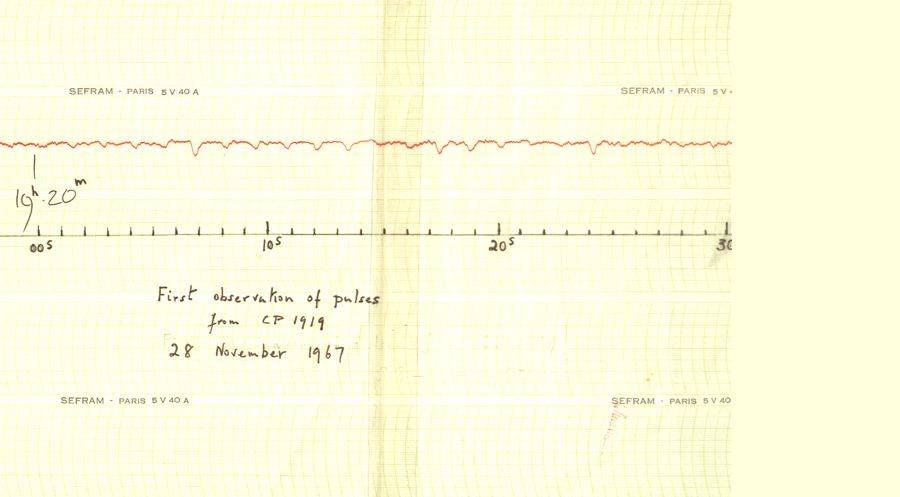

"On 28 November 1967, it came again, a string of pulses one-and-a third seconds apart." - Jocelyn Bell Burnell

"On 28 November 1967, it came again, a string of pulses one-and-a third seconds apart." - Jocelyn Bell Burnell
Almost immediately after the discovery of pulsars, physicists postulate that they are rapidly rotating neutron stars:
Pulsars are surrounded by a large number of charged particles, mainly $e^-$ and $e^+$. These particles form a plasma.
These particles emit the observable radiation that pulses with the rotation of the star.
The plasma-filled environment around a pulsar is called its magnetosphere.
The presence of plasma modifies the structure of the magnetosphere:
The same structure persists when the pulsar is tilted:
Radio waves come from their magnetic pole
X-rays come from the surface of the pulsar
Gamma-rays come from the current sheets in the magnetosphere
X-rays from the surface bend under the influence of the pulsar's gravity:
Gamma-rays come from the current sheet:
In 2020, we modeled a particular pulsar, PSR J0030+0451